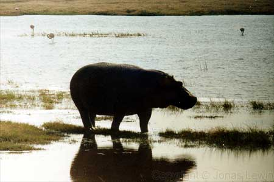
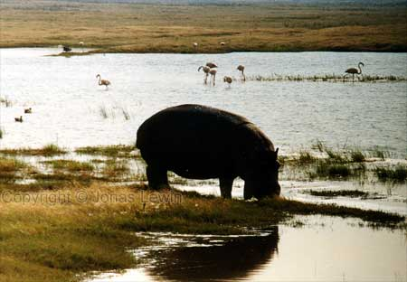

Hippopotamus.
|
The
first rule you have to learn about Hippos: Don't stand between water and a Hippo. As it has no sweat gland on it's skin, there is no way for it to cool down when standing in the sun. It has to go into the water to cool down. Standing in it's way (unintentionally) is something that kills many people every year. Stay away. Stay in the car. Just have a look at it, and enjoy your visit to it's home. Remember, you are intruding on it's home. I guess you would not want a live Hippo in your livingroom? For just eating plants, it has enormous tusks, and some fearsome weapons against rivals. |